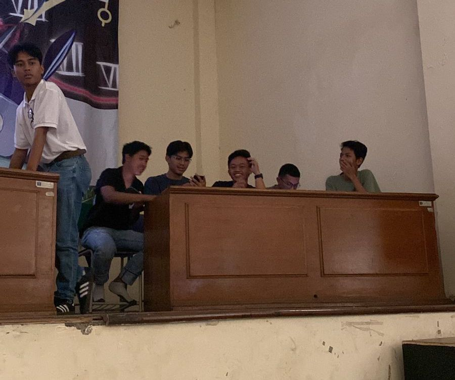
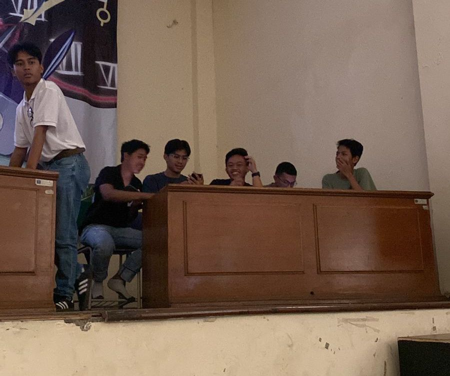

SMA Negeri 3 Bandung adalah salah satu sekolah menengah atas terbaik di Kota Bandung yang dikenal dengan prestasi akademik dan non-akademiknya. Sekolah ini memiliki sejarah panjang sebagai institusi pendidikan yang melahirkan lulusan-lulusan berkualitas dan berprestasi di berbagai bidang. Berlokasi di Jl. Belitung, SMA 3 Bandung berdiri megah dengan suasana lingkungan yang nyaman dan mendukung proses belajar mengajar. Siswa-siswi di sini dikenal sebagai pelajar yang cerdas, kreatif, dan aktif dalam beragam kegiatan.
BERITA SEKOLAH
PORAK SMA Negeri 3 Bandung KAMPRT SMA Negeri 3 Bandung TRIBUTES 2023 ...lihat lebih lanjut 

Selain itu, SMA Negeri 3 Bandung juga memiliki beragam fasilitas penunjang yang modern dan lengkap. Laboratorium sains, ruang komputer, perpustakaan dengan koleksi buku yang beragam, serta fasilitas olahraga seperti lapangan basket dan futsal, semuanya tersedia untuk mendukung kegiatan akademik maupun ekstrakurikuler siswa. Berbagai organisasi dan ekstrakurikuler aktif seperti OSIS, Paskibra, seni tari, musik, teater, hingga olahraga turut mengasah kemampuan non-akademik siswa dalam bidang kepemimpinan, seni, dan olahraga.
Prestasi-prestasi gemilang baik di tingkat kota, provinsi, nasional, bahkan internasional sering diraih oleh siswa-siswi SMA Negeri 3 Bandung. Mereka kerap menjuarai berbagai kompetisi, seperti olimpiade sains, lomba debat, dan kompetisi olahraga. Tak heran jika SMA Negeri 3 Bandung menjadi salah satu pilihan utama bagi para orang tua dan siswa yang ingin menempuh pendidikan di lingkungan yang kompetitif dan berkualitas.